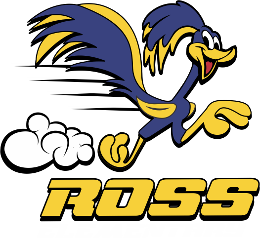

K–2 ELA PROFESSIONAL LEARNING • SESSION 8 • THU, NOV 5
Q2 Kickoff: From Access to Independence
Team targets set from the Session 7 commitments • LaShaudra Cox • Ross Elementary • 60 minutes

| Time | Segment | Focus |
|---|
| 10 min | Q1 in the rearview | The quarter's movement — participation, mastery, scaffolds |
| 10 min | The Q2 shift | From access to independence: fade, write, group by need |
| 25 min | Team target setting | Turn each Session 7 commitment into a number and a date |
| 10 min | Map the quarter | Wonders Q2 units by grade; where each practice lands |
| 5 min | Commit & close | Exit ticket + preview of Session 9 |
Bring: your team's Q1 data summary + your Q2 Wonders map
Leave with: one independence target per team — a number and a date
K–2 ELA PROFESSIONAL LEARNING • SESSION 9 • THU, NOV 19 • WITH ESL & SPED
Fading Scaffolds: Planning the Exit
Gradual release applied to Quarter 1's scaffolds • 60 minutes
| Time | Segment | Focus |
|---|
| 10 min | Targets debrief | First evidence against each team's Q2 target |
| 10 min | Fading, not dropping | Shrink before you remove; exit evidence is observable |
| 25 min | Fade planning | Audit your fade tracker with ESL & SPED: what comes down, for whom, on what evidence |
| 10 min | Annotate the fade | Write fade steps into next week's lessons |
| 5 min | Commit & close | Exit ticket + preview of Session 10 |
Bring: your Scaffold Fade Tracker, current
Leave with: one fade plan, taught before Session 10
K–2 ELA PROFESSIONAL LEARNING • SESSION 10 • THU, DEC 3
Writing Through the Lens of Access
Modeled → shared → independent writing in the Wonders block • 60 minutes
| Time | Segment | Focus |
|---|
| 10 min | Fade debrief | Which scaffolds came down — and held |
| 15 min | The writing release | Modeled → shared → independent; who writes vs. who watches |
| 25 min | Plan the writing week | One release cycle planned into next week's Wonders lessons |
| 10 min | Commit & close | Exit ticket + preview of Session 11 |
Bring: a class writing sample set + your Wonders map
Leave with: one writing routine + a writing count plan (who writes, n/n)
K–2 ELA PROFESSIONAL LEARNING • SESSION 11 • THU, DEC 17 • WITH ESL & SPED
Small Groups & Workstations with Accountability
Need-based groups + stations that hold participation • 60 minutes
| Time | Segment | Focus |
|---|
| 10 min | Writing debrief | Writing counts + release-cycle evidence |
| 10 min | Groups by need | Re-forming groups from the latest sort — not fixed levels |
| 25 min | Build the rotation | Rotation chart + station accountability, with ESL & SPED input |
| 10 min | Data prep | What to gather for the mid-year review |
| 5 min | Commit & close | Exit ticket + preview of Session 12 |
Bring: your latest sorted class set + rotation chart
Leave with: one station accountability routine + reteach rotation plan
K–2 ELA PROFESSIONAL LEARNING • SESSION 12 • EARLY JANUARY
Mid-Year Data Review: Did Independence Grow?
Winter screening vs. targets → the Quarter 3 focus • 60 minutes
| Time | Segment | Focus |
|---|
| 5 min | The semester in one slide | Q1 built access; Q2 built independence — the claims to test |
| 10 min | Triangulate | Winter screening + counts + sorts, against each team's targets |
| 25 min | Team data summary | Movement, gaps, bright spots — the mid-year one-pager |
| 15 min | Share & commit | Two minutes per team: summary + Quarter 3 commitment |
| 5 min | Celebrate & close | Name the growth — semester one, done with evidence |
Bring: Q2 counts, sorts, fade log, and writing samples
Leave with: a mid-year team data summary + Quarter 3 commitments